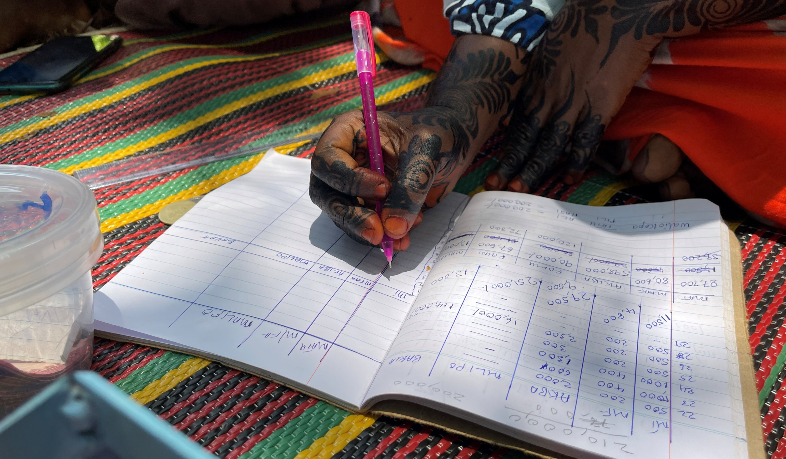

<title>Greenfi – Community Eco-Credit</title>
<meta name="description" content="Greenfi.org provides knowledge and tools to support the community eco-credit 
methodology for informal financial self-help groups, building environmental, financial and social wealth.">

<section>
  <h2>Open-source tools for set up of eco-credit groups</h2>
  
  <p>
    Greenfi.org shares knowledge and tools which support use of the "community eco-credit methodology" by informal 
    financial self-help groups. This approach gives groups a self-owned and 
    self-managed green financial instrument, designed to build local environmental, financial and social wealth. 
    Five organisations have used the Greenfi approach to help nearly 300 new and established groups, with 20–30 members 
    each, to operate small revolving eco-credit funds.
  </p>
  

  
    <a href="#approach" data-section="approach" class="cta-link">
      Learn More
    </a>
  </p>
</section>
